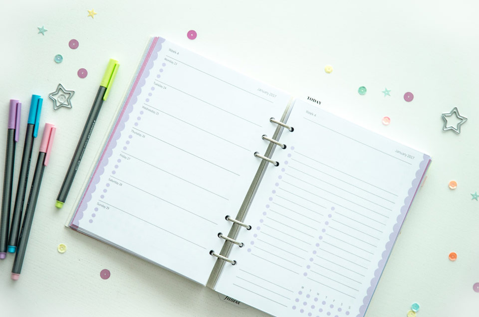
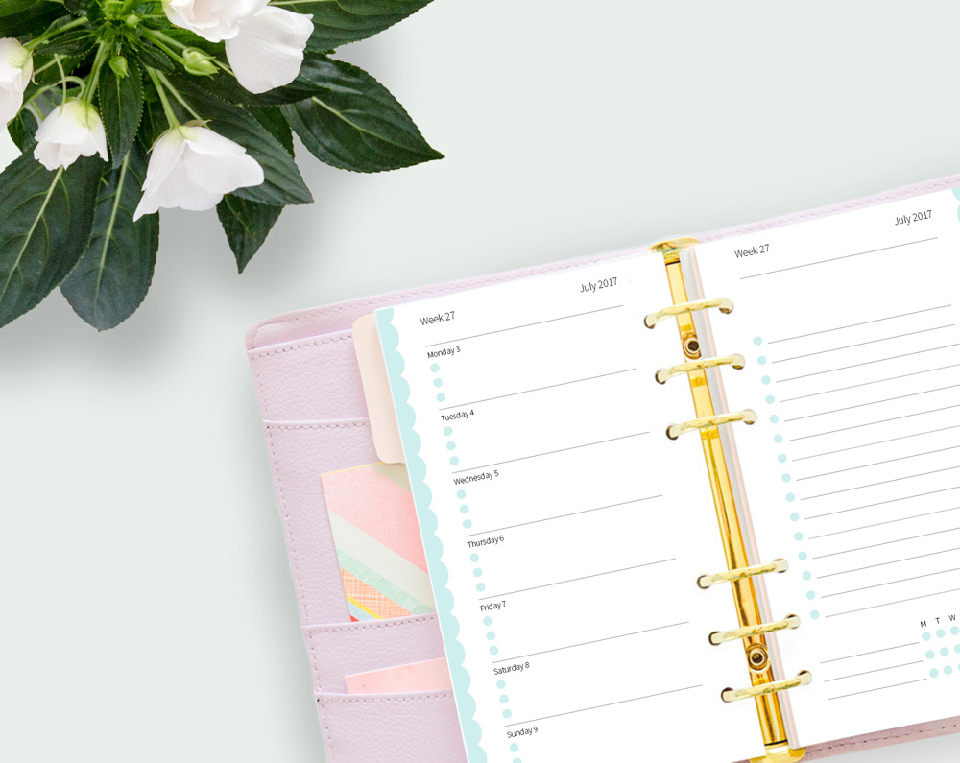

Jeg har en ikke-så-hemmelig passion for alt hvad der hedder kontorartikler og især kalender-design er mit hjerte nært.
I kalendere skal funktion og æstetik virkelig spille sammen, for at skabe en smuk ramme om brugerens hverdag, gøremål og tanker. Her skal være nok struktur til at brugeren ikke skal bruge tid på at lave egne systemer, men ikke så meget struktur, at brugeren føler sig låst fast.
Disse kalender-sider er designet til at passe i en Filofax-spiralkalender, hvor indholdet kan udskiftes år efter år. Her er både månedsopslag og ugeopslag - til både Personal Size og A5 Size Filofax.
Hvis man er pjattet med kalendere, er man formodentlig også vild med produktivitet. Det er jeg!
Når jeg arbejder med mange sider fyldt med data, er det vigtigt at det gøres effektivt og korrekt. Derfor er jeg blevet lidt af en ekspert i automatisering af layouts – og det er akkurat lige så nørdet og fantastisk, som det lyder.
 